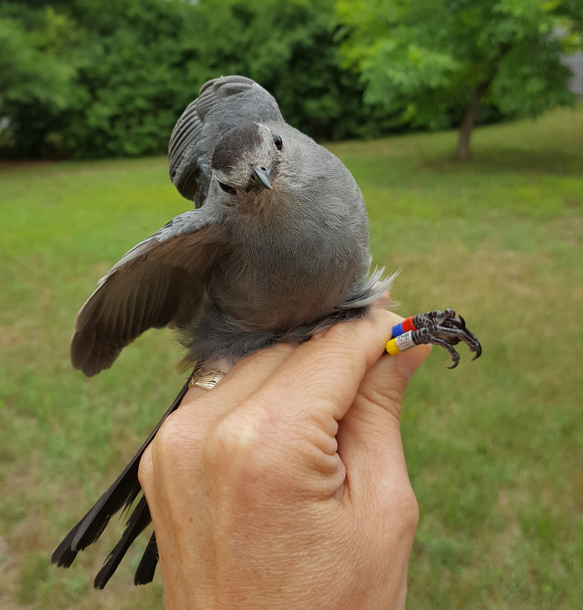

Estimating survivorship with mark-recapture data in R
Brian S. Evans, Ph.D.
Project Description and Context

In this module, we will import and analyze banding and re-encounter data on three species of birds: the gray catbird (Dumetella carolinensis), northern cardinal (Cardinalis cardinalis), and song sparrow (Melospiza melodia). The data were collected between the years 2012 and 2017 from 128 banding stations in the metropolitan areas of Washington D.C., Gainesville Florida, and Springfield Massachussetts. Banding efforts are associated with the Smithsonian’s Neighborhood Nestwatch project – a citizen science program in which Smithsonian scientists band birds in participants backyards one day per year. In addition to banding, the scientists search for previously color-banded birds (resighting) and conduct point counts and habitat surveys during their visit. The participants contribute data to the project by reporting color-banded birds observed throughout the year. We will use these data collected to construct and compare Cormack-Jolly-Seber (CJS) models in the R package marked.
Exercise Objectives
- Practice and expand upon data summarizing and reshaping steps
- Learn how to construct and interpret CJS models
- Learn how to plot CJS model output
Setup
We will start by loading the primary libraries that provide us with the tools for analyzing mark-recapture data.
library(tidyverse)
library(lubridate)
library(marked)Then set some options for this session:
select <-
dplyr::selectWe will read the data directly from the internet. If you were to read these files from your computer, the location of the file on your hard drive would be used in place of the URL:
sites <-
read_csv('https://www.dropbox.com/s/wepk383tdqv54oo/sites.csv?dl=1')
bandingRecords <-
read_csv('https://www.dropbox.com/s/fxiyavgbmwtfmrz/bandingRecords.csv?dl=1')
resights <-
read_csv('https://www.dropbox.com/s/psp8ssrwwopaz5l/resights.csv?dl=1')Data exploration
Let’s take a moment to explore each of these files.
Sites
The sites file consists of three variables:- siteID: a unique identifier of the site
- region: the metropolitan area the site is associated with
- imp: the percent cover of impervious surface (e.g., pavement, sidewalks, and roofs) within 500 meters of the site center. This variable is used as a proxy fo the degree of urban landcover at a site.
sites## # A tibble: 128 x 3
## siteID region imp
## <chr> <chr> <dbl>
## 1 dc_1 dc 12.1
## 2 dc_2 dc 17.8
## 3 dc_3 dc 16.3
## 4 dc_4 dc 14.9
## 5 dc_5 dc 13.6
## 6 dc_6 dc 23.7
## 7 dc_7 dc 7.39
## 8 dc_8 dc 22.6
## 9 dc_9 dc 9.79
## 10 dc_10 dc 16.1
## # ... with 118 more rowsLet’s use the tools we learned yesterday to view the number of sites per region:
sites %>%
group_by(region) %>%
summarize(n = n())## # A tibble: 3 x 2
## region n
## <chr> <int>
## 1 dc 80
## 2 gainesville 21
## 3 springfield 27We can also calculate the amount of impervious surface in each region in our summary table:
sites %>%
group_by(region) %>%
summarize(
n = n(),
meanImp = mean(imp))## # A tibble: 3 x 3
## region n meanImp
## <chr> <int> <dbl>
## 1 dc 80 18.9
## 2 gainesville 21 11.4
## 3 springfield 27 12.9If urban land cover influences survival, would a simple analysis of survival by region be appropriate? Why or why not?
Banding records
The bandingRecords file consists of several variables describing a banding event:
- siteID: a unique identifier of the site
- date: the date a site was visited, in ISO 8601 date format
- time: time in military-clock format. Time values of 0001 represent no data
- enc: the type of encounter, where R is a recapture and B is a banding event
- spp: four letter species alpha code
- bandNumber: the band number, with a dash separating the band prefix and suffix
- colorCombo: color bands placed on the bird, with the left and right legs separated by a comma
- mass: the weight of the bird in grams. 99999 represents no data.
- wing: the length of the wing in mm. 99999 represents no data.
- tl: the length of the tail in mm. 99999 represents no data.
- age: the age of the bird (AHY = after hatch year, SY = second year, ASY = after second year)
- sex: the sex of the bird (M = male, F = female)
bandingRecords## # A tibble: 1,117 x 12
## siteID date time enc spp bandNumber colorCombo mass wing
## <chr> <date> <chr> <chr> <chr> <chr> <chr> <dbl> <dbl>
## 1 dc_61 2012-04-18 0930 B NOCA 791-17230 YY,X 39.6 95.5
## 2 dc_38 2012-05-04 0001 B GRCA 791-17233 WX,B 38.8 91
## 3 dc_38 2012-05-04 0001 B SOSP 2441-96447 Y,XG 22.4 70
## 4 dc_38 2012-05-04 0001 B SOSP 2441-96448 OB,X 20.6 64
## 5 dc_69 2012-05-10 0001 B GRCA 791-17238 OB,X 37.7 91
## 6 dc_69 2012-05-10 0001 B GRCA 791-17239 R,XR 43.3 89
## 7 dc_69 2012-05-10 0001 B SOSP 2441-96450 YX,Y 19.4 67
## 8 dc_69 2012-05-10 0001 B SOSP 2441-96451 WX,O 22 70
## 9 dc_6 2012-05-12 0001 B GRCA 791-17246 WX,B 36.9 91
## 10 dc_6 2012-05-12 0001 B GRCA 791-17247 O,MX 41.2 90
## # ... with 1,107 more rows, and 3 more variables: tl <dbl>, age <chr>,
## # sex <chr>There are a lot of NA values in the measurement data. Let’s explore how many of the records have valid mass, wing, and tail lengths:
bandingRecords %>%
filter(mass != 99999) %>%
nrow## [1] 1092bandingRecords %>%
filter(wing != 99999) %>%
nrow## [1] 1029bandingRecords %>%
filter(tl != 99999) %>%
nrow## [1] 489This highlights the importance of exploring data prior to running analyses. Sample sizes for mass and wing are likely adequate to use these as covariates in a survival model. At 494 samples, however, there are probably not enough tail measurements to run the models.
If we wanted to determine how many birds were banded by region, we first have to join the bandingRecords file with the sites file by the common column “siteID” and then group and summarize the data:
bandingRecords %>%
left_join(
sites,
by = 'siteID'
) %>%
group_by(region) %>%
summarize(n = length(unique(bandNumber)))## # A tibble: 3 x 2
## region n
## <chr> <int>
## 1 dc 658
## 2 gainesville 141
## 3 springfield 224
Why would we have to use length(unique(bandNumber)) instead of simply n() as we did in the previous section?
We can evaluate the number of banded and recaptured birds per region by using “region” and “type” grouping variables:
bandingRecords %>%
left_join(
sites,
by = 'siteID'
) %>%
group_by(region, enc) %>%
summarize(n = length(unique(bandNumber)))## # A tibble: 6 x 3
## # Groups: region [?]
## region enc n
## <chr> <chr> <int>
## 1 dc B 658
## 2 dc R 46
## 3 gainesville B 141
## 4 gainesville R 12
## 5 springfield B 224
## 6 springfield R 22
We can view our summary table in wide format using the function spread:
bandingRecords %>%
left_join(
sites,
by = 'siteID'
) %>%
group_by(region, enc) %>%
summarize(n = length(unique(bandNumber))) %>%
spread(key = enc, value = n)## # A tibble: 3 x 3
## # Groups: region [3]
## region B R
## <chr> <int> <int>
## 1 dc 658 46
## 2 gainesville 141 12
## 3 springfield 224 22If we want to know the proportion of birds that were recaptured, expressed as a percentage, we can use mutate to add a new column:
bandingRecords %>%
left_join(
sites,
by = 'siteID'
) %>%
group_by(region, enc) %>%
summarize(n = length(unique(bandNumber))) %>%
spread(key = enc, value = n) %>%
mutate(percentRecap = R/B*100)## # A tibble: 3 x 4
## # Groups: region [3]
## region B R percentRecap
## <chr> <int> <int> <dbl>
## 1 dc 658 46 6.99
## 2 gainesville 141 12 8.51
## 3 springfield 224 22 9.82Resights
The resights file consists of three variables describing a resight event:
- date: the date a site was visited, in ISO 8601 date format
- bandNumber: the band number, with a dash separating the band prefix and suffix
- type: the type of encounter, where P is a participant (citizen scientist) resight and T is a resight by a Smithsonian technician
resights## # A tibble: 602 x 3
## date bandNumber type
## <date> <chr> <chr>
## 1 2012-01-23 2531-91135 P
## 2 2012-01-31 1991-18070 T
## 3 2012-01-31 1991-18072 T
## 4 2012-01-31 1991-18075 T
## 5 2012-01-31 1991-18078 T
## 6 2012-02-25 2531-91135 P
## 7 2012-07-03 1991-18078 P
## 8 2012-07-12 1991-18077 P
## 9 2012-07-12 1991-18080 P
## 10 2012-07-13 1991-18077 P
## # ... with 592 more rowsWe can determine the number of resights by type, as above:
resights %>%
group_by(type) %>%
summarize(n = n())## # A tibble: 2 x 2
## type n
## <chr> <int>
## 1 P 370
## 2 T 232If we wanted to know how many resights there were by species, we would have to do join the bandingRecords and resights files by the common column ‘bandNumber’ prior to grouping and summarizing the data:
resights %>%
left_join(
bandingRecords,
by = 'bandNumber') %>%
group_by(spp) %>%
summarize(n = n())## # A tibble: 3 x 2
## spp n
## <chr> <int>
## 1 GRCA 116
## 2 NOCA 526
## 3 SOSP 76We can use the additional grouping variable “type” to view the number of birds resighted by type and species:
resights %>%
left_join(
bandingRecords,
by = 'bandNumber') %>%
group_by(spp, type) %>%
summarize(n = length(unique(bandNumber)))## # A tibble: 6 x 3
## # Groups: spp [?]
## spp type n
## <chr> <chr> <int>
## 1 GRCA P 26
## 2 GRCA T 37
## 3 NOCA P 85
## 4 NOCA T 79
## 5 SOSP P 9
## 6 SOSP T 37Exercise One:
Create a wide-format summary table that provides the number of birds banded, recaptured, and resighted (across types) per region. Include additional columns that provides the proportion of birds recaptured and resighted, expressed as a percentage.
Preparing data for analysis
The goal of this section is to generate a data frame that is ready to be evaluated using CJS models. It’s a bit of a long process, so it’s good to see what we’re aiming for (a light at the end of the tunnel?). The final product will look something like the table below:
## # A tibble: 1,067 x 8
## ch siteID spp mass age sex region imp
## <chr> <chr> <chr> <dbl> <chr> <chr> <chr> <dbl>
## 1 110000 gainesville_7 NOCA 40.9 AHY M gainesville 0.796
## 2 100000 gainesville_16 NOCA 39.5 AHY M gainesville 5.43
## 3 100000 gainesville_9 NOCA 43.5 AHY M gainesville 9.39
## 4 100000 springfield_5 GRCA 37 SY F springfield 32.2
## 5 111000 springfield_5 NOCA 43.3 AHY M springfield 32.2
## 6 100000 springfield_10 GRCA 37 AHY M springfield 14.5
## 7 100000 springfield_10 GRCA 39 AHY F springfield 14.5
## 8 100000 springfield_10 NOCA 40 AHY M springfield 14.5
## 9 100000 springfield_1 GRCA 34 AHY M springfield 20.5
## 10 110000 springfield_2 NOCA 43 AHY M springfield 1.69
## # ... with 1,057 more rowsTo prepare data for analysis, you first have to turn your encounter records into a wide format data frame that represents the encounter history for a bird (also called a capture history). The columns for this data frame represent the band number (the first column) and time of encounter (subsequent columns). The encounter table, with encounters summarized by year, looks something like the table below, where 1 means a bird was encountered in the time period and 0 mean that it was not:
| bandNumber | X2001 | X2002 | X2003 |
|---|---|---|---|
| 111-22222 | 1 | 0 | 1 |
| 222-33333 | 1 | 1 | 0 |
| 444-55555 | 1 | 0 | 1 |
Because the encounter history is used to construct models, this led many researchers to store their data in tables, such as the one below:
| bandNumber | X2001 | X2002 | X2003 |
|---|---|---|---|
| 111-22222 | banded 5/16; recap 7/24; resight 9/15 |
|
resight 8/15 |
| 222-33333 | banded 5/16 | recap 7/12 resight 10/14 |
|
| 444-55555 | banded 5/16 |
|
recap 6/14; resight 9/18 |
Why is the table above a good way to store encounter records? Why is it a really bad way to store encounter records?
Generating encounter histories with long-format data
We can use our long format data frame to generate an encounter history in just a few simple steps. First, we will use the select function to select just the band number and date columns from the bandingRecords and resights data frames:
bandingRecords %>%
select(bandNumber, date)## # A tibble: 1,117 x 2
## bandNumber date
## <chr> <date>
## 1 791-17230 2012-04-18
## 2 791-17233 2012-05-04
## 3 2441-96447 2012-05-04
## 4 2441-96448 2012-05-04
## 5 791-17238 2012-05-10
## 6 791-17239 2012-05-10
## 7 2441-96450 2012-05-10
## 8 2441-96451 2012-05-10
## 9 791-17246 2012-05-12
## 10 791-17247 2012-05-12
## # ... with 1,107 more rowsresights %>%
select(bandNumber, date)## # A tibble: 602 x 2
## bandNumber date
## <chr> <date>
## 1 2531-91135 2012-01-23
## 2 1991-18070 2012-01-31
## 3 1991-18072 2012-01-31
## 4 1991-18075 2012-01-31
## 5 1991-18078 2012-01-31
## 6 2531-91135 2012-02-25
## 7 1991-18078 2012-07-03
## 8 1991-18077 2012-07-12
## 9 1991-18080 2012-07-12
## 10 1991-18077 2012-07-13
## # ... with 592 more rows
Because these two data frames have the same column names, we can safely bind them into a single frame using bind_rows():
bind_rows(
bandingRecords %>%
select(bandNumber, date),
resights %>%
select(bandNumber, date)
)## # A tibble: 1,719 x 2
## bandNumber date
## <chr> <date>
## 1 791-17230 2012-04-18
## 2 791-17233 2012-05-04
## 3 2441-96447 2012-05-04
## 4 2441-96448 2012-05-04
## 5 791-17238 2012-05-10
## 6 791-17239 2012-05-10
## 7 2441-96450 2012-05-10
## 8 2441-96451 2012-05-10
## 9 791-17246 2012-05-12
## 10 791-17247 2012-05-12
## # ... with 1,709 more rows
We can use the transmute function with year() (a function from the lubridate package) to make a data frame of just band number and year:
bind_rows(
bandingRecords %>%
select(bandNumber, date),
resights %>%
select(bandNumber, date)
) %>%
transmute(
bandNumber,
year = year(date))## # A tibble: 1,719 x 2
## bandNumber year
## <chr> <dbl>
## 1 791-17230 2012
## 2 791-17233 2012
## 3 2441-96447 2012
## 4 2441-96448 2012
## 5 791-17238 2012
## 6 791-17239 2012
## 7 2441-96450 2012
## 8 2441-96451 2012
## 9 791-17246 2012
## 10 791-17247 2012
## # ... with 1,709 more rowsIf we arrange these data by band number, however, we can quickly notice that we have generated duplicate records:
bind_rows(
bandingRecords %>%
select(bandNumber, date),
resights %>%
select(bandNumber, date)
) %>%
transmute(
bandNumber,
year = year(date)) %>%
arrange(bandNumber)## # A tibble: 1,719 x 2
## bandNumber year
## <chr> <dbl>
## 1 1292-71301 2012
## 2 1292-71301 2013
## 3 1292-71311 2012
## 4 1292-71313 2012
## 5 1891-11010 2012
## 6 1891-11011 2012
## 7 1891-11011 2012
## 8 1891-11011 2013
## 9 1891-11011 2013
## 10 1891-11011 2013
## # ... with 1,709 more rows
To counter this problem, we can use the function distinct to remove duplicate records:
bind_rows(
bandingRecords %>%
select(bandNumber, date),
resights %>%
select(bandNumber, date)
) %>%
transmute(
bandNumber,
year = year(date)) %>%
distinct## # A tibble: 1,407 x 2
## bandNumber year
## <chr> <dbl>
## 1 791-17230 2012
## 2 791-17233 2012
## 3 2441-96447 2012
## 4 2441-96448 2012
## 5 791-17238 2012
## 6 791-17239 2012
## 7 2441-96450 2012
## 8 2441-96451 2012
## 9 791-17246 2012
## 10 791-17247 2012
## # ... with 1,397 more rows
This frame is now a long-form record of bandNumber by year and forms the basis of the encounter histories. Let’s assign the name encountersLong to the object:
encountersLong <-
bind_rows(
bandingRecords %>%
select(bandNumber, date),
resights %>%
select(bandNumber, date)
) %>%
transmute(
bandNumber,
year = year(date)) %>%
distinctWe are now ready to make the encounter history file! To do so, we start by adding a dummy column where all encounters are defined as 1:
encountersLong %>%
mutate(enc = 1)## # A tibble: 1,407 x 3
## bandNumber year enc
## <chr> <dbl> <dbl>
## 1 791-17230 2012 1
## 2 791-17233 2012 1
## 3 2441-96447 2012 1
## 4 2441-96448 2012 1
## 5 791-17238 2012 1
## 6 791-17239 2012 1
## 7 2441-96450 2012 1
## 8 2441-96451 2012 1
## 9 791-17246 2012 1
## 10 791-17247 2012 1
## # ... with 1,397 more rows
We now use spread() make encountersLong into a wide-format object. The dummy column enc is useful here, because that is the value that is provided to the cells. We use the argument fill = 0 to fill any missing values with 0:
encountersLong %>%
mutate(enc = 1) %>%
spread(key = year, value = enc, fill = 0)## # A tibble: 1,023 x 7
## bandNumber `2012` `2013` `2014` `2015` `2016` `2017`
## <chr> <dbl> <dbl> <dbl> <dbl> <dbl> <dbl>
## 1 1292-71301 1 1 0 0 0 0
## 2 1292-71311 1 0 0 0 0 0
## 3 1292-71313 1 0 0 0 0 0
## 4 1891-11010 1 0 0 0 0 0
## 5 1891-11011 1 1 1 0 0 0
## 6 1891-11017 1 0 0 0 0 0
## 7 1891-11018 1 0 0 0 0 0
## 8 1891-11019 1 0 0 0 0 0
## 9 1891-11020 1 0 0 0 0 0
## 10 1891-11021 1 1 0 0 0 0
## # ... with 1,013 more rows
The input to a CJS model is actually a vector character values called the “capture history” in which the 1s and 0s across the columns of the encounter history are collapsed into a single value. For example, the capture history for the first bird in our encountersWide frame is “110000”. To make the capture history we will use a new function, unite, as below:
encountersLong %>%
mutate(enc = 1) %>%
spread(key = year, value = enc, fill = 0) %>%
unite(ch, -bandNumber, sep = '')## # A tibble: 1,023 x 2
## bandNumber ch
## <chr> <chr>
## 1 1292-71301 110000
## 2 1292-71311 100000
## 3 1292-71313 100000
## 4 1891-11010 100000
## 5 1891-11011 111000
## 6 1891-11017 100000
## 7 1891-11018 100000
## 8 1891-11019 100000
## 9 1891-11020 100000
## 10 1891-11021 110000
## # ... with 1,013 more rowsIncluding banding and environmental data into encounter histories
The above is a great start, and we could run a simple CJS model with these data, but thus far we only have what it takes to model apparent survival and detection probabilities with no other variables – not even species!
Using band number as the common column, we can bring in some banding data to inform our models. Let’s select some columns from bandingRecords that we would like to include in our models. We’ll subset the records to just those associated with the initial banding event.
bandingRecords %>%
filter(enc == 'B') %>%
select(bandNumber, siteID, spp, mass, age, sex)## # A tibble: 1,032 x 6
## bandNumber siteID spp mass age sex
## <chr> <chr> <chr> <dbl> <chr> <chr>
## 1 791-17230 dc_61 NOCA 39.6 AHY F
## 2 791-17233 dc_38 GRCA 38.8 AHY M
## 3 2441-96447 dc_38 SOSP 22.4 AHY M
## 4 2441-96448 dc_38 SOSP 20.6 AHY M
## 5 791-17238 dc_69 GRCA 37.7 AHY M
## 6 791-17239 dc_69 GRCA 43.3 AHY F
## 7 2441-96450 dc_69 SOSP 19.4 AHY M
## 8 2441-96451 dc_69 SOSP 22 AHY M
## 9 791-17246 dc_6 GRCA 36.9 AHY M
## 10 791-17247 dc_6 GRCA 41.2 AHY M
## # ... with 1,022 more rows
We will now join this file to our encounter history. We’ll remove the bandNumber column, because we no longer need it:
encountersLong %>%
mutate(enc = 1) %>%
spread(key = year, value = enc, fill = 0) %>%
unite(ch, -bandNumber, sep = '') %>%
left_join(
bandingRecords %>%
filter(enc == 'B') %>%
select(bandNumber, siteID, spp, mass, age, sex),
by = 'bandNumber'
) %>%
select(-bandNumber)## # A tibble: 1,032 x 6
## ch siteID spp mass age sex
## <chr> <chr> <chr> <dbl> <chr> <chr>
## 1 110000 gainesville_7 NOCA 40.9 AHY M
## 2 100000 gainesville_16 NOCA 39.5 AHY M
## 3 100000 gainesville_9 NOCA 43.5 AHY M
## 4 100000 springfield_5 GRCA 37 SY F
## 5 111000 springfield_5 NOCA 43.3 AHY M
## 6 100000 springfield_10 GRCA 37 AHY M
## 7 100000 springfield_10 GRCA 39 AHY F
## 8 100000 springfield_10 NOCA 40 AHY M
## 9 100000 springfield_1 GRCA 34 AHY M
## 10 110000 springfield_2 NOCA 43 AHY M
## # ... with 1,022 more rows
If we want to see how survival varies by region or impervious surface, there is one more step we might want to take. Because the encounter and site data both contain the common column siteID, we can join the two tables to include our environmental variables. We then remove the siteID column, as it is no longer needed. This is the final step, so we will name the resultant frame encounterHistory for use in modeling.
encounterHistory <-
encountersLong %>%
mutate(enc = 1) %>%
spread(key = year, value = enc, fill = 0) %>%
unite(ch, -bandNumber, sep = '') %>%
left_join(
bandingRecords %>%
filter(enc == 'B') %>%
select(bandNumber, siteID, spp, mass, age, sex),
by = 'bandNumber'
) %>%
select(-bandNumber) %>%
left_join(
sites,
by = 'siteID'
) %>%
select(-siteID)Exercise Two:
- Subset the banding records to just those associated with the northern cardinal (NOCA).
- Make a long-form encounterHistory for the northern cardinal. Assign the name
encountersLong_noca.- Create an encounter history file (that includes environmental and banding data) for the northern cardinal, as above. Assign the name
encounterHistory_nocaresultant file.- Extra credit (only complete this if you have extra time): Using the file
encountersLong_noca, create a summary table of the number of times cardinals were encountered (for example, the number of cardinals that were encountered five times).
Simple CJS models
We will start by making a simple model with no covariates. To do so, let’s first select just the capture history column and convert the output to data frame (because tibble objects confuse marked). We’ll assign the name noca_simple to the resultant object:
noca_simple <-
encounterHistory_noca %>%
select(ch) %>%
data.frame
We can use the function process.data to initialize the CJS model. Let’s run this function on noca_simple. Note that I use . as a separator in the assigned name. This is because . is used to describe file types.
noca_simple.proc <-
process.data(noca_simple)## 432 capture histories collapsed into 37
This function outputs a list of objects that inform the CJS model. For now, let’s look at the data output, which describes the frequency of occurence for each capture history:
noca_simple.proc$data## ch freq id
## 74 0,0,0,1,0,0 77 1
## 181 0,0,0,1,0,1 7 2
## 73 0,0,0,1,1,0 29 3
## 83 0,0,0,1,1,1 6 4
## 104 0,0,1,0,0,0 69 5
## 116 0,0,1,0,0,1 5 6
## 175 0,0,1,0,1,0 11 7
## 173 0,0,1,0,1,1 4 8
## 107 0,0,1,1,0,0 8 9
## 177 0,0,1,1,1,0 2 10
## 108 0,0,1,1,1,1 4 11
## 8 0,1,0,0,0,0 52 12
## 191 0,1,0,0,0,1 2 13
## 48 0,1,0,0,1,0 3 14
## 60 0,1,0,1,0,0 5 15
## 152 0,1,0,1,0,1 3 16
## 190 0,1,0,1,1,0 1 17
## 10 0,1,0,1,1,1 2 18
## 9 0,1,1,0,0,0 10 19
## 67 0,1,1,0,0,1 1 20
## 251 0,1,1,0,1,1 1 21
## 150 0,1,1,1,0,0 2 22
## 169 0,1,1,1,0,1 1 23
## 249 0,1,1,1,1,0 2 24
## 12 0,1,1,1,1,1 5 25
## 2 1,0,0,0,0,0 82 26
## 231 1,0,0,0,0,1 1 27
## 138 1,0,0,0,1,0 2 28
## 28 1,0,0,1,0,0 4 29
## 94 1,0,1,0,0,0 6 30
## 1 1,1,0,0,0,0 13 31
## 102 1,1,0,0,0,1 1 32
## 37 1,1,0,0,1,0 2 33
## 131 1,1,0,1,0,0 2 34
## 35 1,1,0,1,1,0 1 35
## 4 1,1,1,0,0,0 3 36
## 34 1,1,1,0,1,0 3 37
We can now run our first CJS model using the function crm:
model_null <-
crm(noca_simple.proc)## Creating design data...## Fitting model## Computing initial parameter estimates## Starting optimization for 2 parameters...##
## Elapsed time in minutes: 0.0043model_null##
## crm Model Summary
##
## Npar : 2
## -2lnL: 1155.333
## AIC : 1159.333
##
## Beta
## Estimate
## Phi.(Intercept) 0.6072404
## p.(Intercept) -0.5040519
The model we ran held both the parameters for survival (Φ) and detectability (p) constant. The model output provides the number of parameters, -2log-likelihood, Akaike’s Information Criteria (AIC), and beta parameter estimates for apparent survival (Phi) and detectability (p). If we would like to see the error about the beta parameter estimates, we can run the function cjs.hession on the modelled output:
cjs.hessian(model_null)##
## crm Model Summary
##
## Npar : 2
## -2lnL: 1155.333
## AIC : 1159.333
##
## Beta
## Estimate se lcl ucl
## Phi.(Intercept) 0.6072404 0.1284175 0.3555421 0.8589388
## p.(Intercept) -0.5040519 0.1415570 -0.7815035 -0.2266002
To view the real estimates for parameters, we use the compute.real function:
compute.real(model_null)## $Phi
## occ estimate
## 1 4 0.6473111
##
## $p
## occ estimate
## 1 5 0.3765889In the above, we see that the estimate apparent annual survival for the cardinal is about 0.65. The survival is “apparent” because this is the probability that a cardinal survives and does not emigrate between sampling occasions. The probability of detecting the cardinal in a sampling period, given that it has survived and has not emigrated, is 0.37.
If we would like to see the error around the real estimates, we can re-run the model with the additional argument hessian = TRUE.
crm(noca_simple.proc, hessian = TRUE) %>%
compute.real## Creating design data...## Fitting model## Computing initial parameter estimates## Starting optimization for 2 parameters...## Computing hessian...##
## Elapsed time in minutes: 0.0033## $Phi
## occ estimate se lcl ucl
## 1 4 0.6473111 0.02931765 0.5879609 0.7024389
##
## $p
## occ estimate se lcl ucl
## 1 5 0.3765889 0.03323329 0.3139959 0.4435911The above provides standard error and confidence regions for our real parameter estimates.
Adding covariates:
We rarely want to know simply the apparent survival of birds, or the probability to detect them if they are at a site. To add covariates of interest, let’s start by making a new process.data file. We’ll include the variable sex and region into the new frame.
noca.proc <-
encounterHistory_noca %>%
data.frame %>%
select(ch, sex, region) %>%
process.data## 432 capture histories collapsed into 104Note in the below that the process data files are of different dimensions. Any idea why this is the case?
dim(noca_simple.proc$data)## [1] 37 3dim(noca.proc$data)## [1] 104 5
Now we need to use the function make.design.data to make our data model-ready. The arguments for this function are is the output from process.data and a list of the parameters of interest. As an example, we will add sex to our model.
noca.ddl <-
noca.proc %>%
make.design.dataWe then provide the formula that we would like to test. In this case, let’s write a formula in which apparent survival is allowed to vary as a function of sex:
Phi.sex <-
list(formula = ~sex)We now define and run the CJS model in which Phi varies by sex:
model_sexPhi <-
crm(
data = noca.proc,
ddl = noca.ddl,
model.parameters = list(Phi = Phi.sex),
accumulate = FALSE,
hessian = TRUE)## Fitting model## Computing initial parameter estimates## Starting optimization for 3 parameters...##
Number of evaluations: 100 -2lnl: 1150.190707## Computing hessian...##
## Elapsed time in minutes: 0.0033model_sexPhi##
## crm Model Summary
##
## Npar : 3
## -2lnL: 1150.191
## AIC : 1156.191
##
## Beta
## Estimate se lcl ucl
## Phi.(Intercept) 0.3701063 0.1585840 0.05928164 0.6809311
## Phi.sexM 0.4361497 0.1932308 0.05741729 0.8148821
## p.(Intercept) -0.4962493 0.1413719 -0.77333815 -0.2191605It appears that male cardinals may survive longer than female cardinals! Let’s look at the real parameter estimates:
compute.real(model_sexPhi)## $Phi
## sex occ estimate se lcl ucl
## 1 F 4 0.5914847 0.03831875 0.5148161 0.6639465
## 2 M 4 0.6913111 0.03485822 0.6191864 0.7551768
##
## $p
## occ estimate se lcl ucl
## 1 5 0.3784225 0.03325333 0.3157574 0.4454281
Looking at the standard error and overlapping confidence regions in the beta and real parameter estimates, the data may not support differential survival between males and females. To really assess whether the inclusion of the sex covariate improved model performance, however, we should use a model selection approach. To do so, we will make and run a custom function (fit_models()). This function includes: formula specifications for Phi and p (as above), a new function create.model.list that generates a list of models to run based on the provided formulas, and a new function crm.wrapper, that runs all of the models in the provided model list.
fit_models <-
function(){
Phi.dot <-
list(formula = ~ 1)
Phi.sex <-
list(formula = ~sex)
p.dot <-
list(formula = ~1)
cml <-
create.model.list(c('Phi','p'))
results <-
crm.wrapper(
cml,
data = noca.proc,
ddl = noca.ddl,
external = FALSE,
accumulate = FALSE,
hessian = TRUE
)
return(results)
}
We can view the results in a model selection table by calling the fit_models function:
modList <-
fit_models()## Phi.dot.p.dot
##
## Elapsed time in minutes: 0.0032
## Phi.sex.p.dot
##
Number of evaluations: 100 -2lnl: 1150.190707
## Elapsed time in minutes: 0.0037modList## model npar AIC DeltaAIC weight neg2lnl convergence
## 2 Phi(~sex)p(~1) 3 1156.191 0.00000 0.8279724 1150.191 0
## 1 Phi(~1)p(~1) 2 1159.333 3.14265 0.1720276 1155.333 0The more complicated model has an AIC that is 3.14 lower than the null model. This provides supportive evidence (ΔAIC > 2) that apparent survival varies by sex.
We can add additional variables quite simply. For example, let’s generate a model where detectability varies by region and evaluate the results:
fit_models <-
function(){
Phi.dot <-
list(formula = ~ 1)
Phi.sex <-
list(formula = ~sex)
p.dot <-
list(formula = ~1)
p.region <-
list(formula = ~region)
cml <-
create.model.list(c('Phi','p'))
results <-
crm.wrapper(
cml,
data = noca.proc,
ddl = noca.ddl,
external = FALSE,
accumulate = FALSE,
hessian = TRUE
)
return(results)
}
modList_sexRegion <-
fit_models()## Phi.dot.p.dot
##
## Elapsed time in minutes: 0.0032
## Phi.dot.p.region
##
Number of evaluations: 100 -2lnl: 1137.953052
Number of evaluations: 200 -2lnl: 1137.492791
## Elapsed time in minutes: 0.0038
## Phi.sex.p.dot
##
Number of evaluations: 100 -2lnl: 1150.190707
## Elapsed time in minutes: 0.0033
## Phi.sex.p.region
##
Number of evaluations: 100 -2lnl: 1132.129418
Number of evaluations: 200 -2lnl: 1132.19412
Number of evaluations: 300 -2lnl: 1131.925121
Number of evaluations: 100 -2lnl: 1132.249789
## Elapsed time in minutes: 0.004modList_sexRegion## model npar AIC DeltaAIC weight neg2lnl
## 4 Phi(~sex)p(~region) 5 1141.925 0.000000 0.8554633770 1131.925
## 2 Phi(~1)p(~region) 4 1145.493 3.567669 0.1437116248 1137.493
## 3 Phi(~sex)p(~1) 3 1156.191 14.265585 0.0006830758 1150.191
## 1 Phi(~1)p(~1) 2 1159.333 17.408236 0.0001419224 1155.333
## convergence
## 4 0
## 2 0
## 3 0
## 1 0It turns out that region as a covariate of the detectability parameter has a huge influence on model performance! Let’s have a look at the real parameter estimates. You can call a specific model by name from the model results list:
names(modList_sexRegion)## [1] "Phi.dot.p.dot" "Phi.dot.p.region" "Phi.sex.p.dot"
## [4] "Phi.sex.p.region" "model.table"compute.real(modList_sexRegion$Phi.sex.p.region)## $Phi
## sex occ estimate se lcl ucl
## 1 F 4 0.6025633 0.03850033 0.5252425 0.6750813
## 2 M 4 0.7074233 0.03551513 0.6333427 0.7719263
##
## $p
## region occ estimate se lcl ucl
## 1 dc 5 0.3210302 0.03568431 0.2554188 0.3945645
## 2 gainesville 5 0.3379819 0.04867822 0.2499816 0.4388352
## 3 springfield 5 0.6566718 0.07768590 0.4932828 0.7898241We can see that estimates of detectability are considerably higher in Springfield than the other study regions! Any ideas regarding why this is the case?
Of course, we might expect that region may have a strong impact on survival as well – these three regions are at considerably different latitudes and represent very different habitats. We can add covariates to our survival parameter as follows:
fit_models <-
function(){
Phi.dot <-
list(formula = ~ 1)
Phi.sex <-
list(formula = ~sex)
Phi.region <-
list(formula = ~region)
Phi.sex.region <-
list(formula = ~sex + region)
p.dot <-
list(formula = ~1)
p.region <-
list(formula = ~region)
cml <-
create.model.list(c('Phi','p'))
results <-
crm.wrapper(
cml,
data = noca.proc,
ddl = noca.ddl,
external = FALSE,
accumulate = FALSE,
hessian = TRUE
)
return(results)
}
modList_sexRegion_additive <-
fit_models()## Phi.dot.p.dot
##
## Elapsed time in minutes: 0.0033
## Phi.dot.p.region
##
Number of evaluations: 100 -2lnl: 1137.953052
Number of evaluations: 200 -2lnl: 1137.492791
## Elapsed time in minutes: 0.0037
## Phi.region.p.dot
##
Number of evaluations: 100 -2lnl: 1148.626229
Number of evaluations: 200 -2lnl: 1148.623806
## Elapsed time in minutes: 0.0037
## Phi.region.p.region
##
Number of evaluations: 100 -2lnl: 1136.499251
Number of evaluations: 200 -2lnl: 1135.844862
Number of evaluations: 300 -2lnl: 1135.253907
Number of evaluations: 100 -2lnl: 1136.076181
## Elapsed time in minutes: 0.0042
## Phi.sex.p.dot
##
Number of evaluations: 100 -2lnl: 1150.190707
## Elapsed time in minutes: 0.0037
## Phi.sex.p.region
##
Number of evaluations: 100 -2lnl: 1132.129418
Number of evaluations: 200 -2lnl: 1132.19412
Number of evaluations: 300 -2lnl: 1131.925121
Number of evaluations: 100 -2lnl: 1132.249789
## Elapsed time in minutes: 0.0042
## Phi.sex.region.p.dot
##
Number of evaluations: 100 -2lnl: 1144.74488
Number of evaluations: 200 -2lnl: 1144.728069
Number of evaluations: 300 -2lnl: 1144.675107
Number of evaluations: 100 -2lnl: 1145.088247
## Elapsed time in minutes: 0.0038
## Phi.sex.region.p.region
##
Number of evaluations: 100 -2lnl: 1141.367
Number of evaluations: 200 -2lnl: 1129.556129
Number of evaluations: 300 -2lnl: 1129.556799
Number of evaluations: 400 -2lnl: 1129.55287
Number of evaluations: 500 -2lnl: 1129.544896
Number of evaluations: 100 -2lnl: 1129.636492
Number of evaluations: 200 -2lnl: 1129.563248
## Elapsed time in minutes: 0.0043modList_sexRegion_additive## model npar AIC DeltaAIC weight
## 6 Phi(~sex)p(~region) 5 1141.925 0.000000 5.925076e-01
## 8 Phi(~sex + region)p(~region) 7 1143.545 1.619775 2.636115e-01
## 2 Phi(~1)p(~region) 4 1145.493 3.567669 9.953697e-02
## 4 Phi(~region)p(~region) 6 1147.200 5.275277 4.238206e-02
## 7 Phi(~sex + region)p(~1) 5 1154.675 12.749985 1.009415e-03
## 5 Phi(~sex)p(~1) 3 1156.191 14.265585 4.731092e-04
## 3 Phi(~region)p(~1) 4 1156.624 14.698684 3.809914e-04
## 1 Phi(~1)p(~1) 2 1159.333 17.408236 9.829776e-05
## neg2lnl convergence
## 6 1131.925 0
## 8 1129.545 0
## 2 1137.493 0
## 4 1135.200 0
## 7 1144.675 0
## 5 1150.191 0
## 3 1148.624 0
## 1 1155.333 0It seems that the additive model that includes sex and region were supported equivalently (ΔAIC within 2). As such, there is not strong evidence that the addition of the region covariate for the survival parameter improved model performance. Despite lack of support, let’s have a look at the real parameter estimates for that model. It is a very good idea to do so, in order to ensure that spurious results are not generated (for example, if Springfield’s high detectability is accompanied by abnormally low survival estimates.
names(modList_sexRegion_additive)## [1] "Phi.dot.p.dot" "Phi.dot.p.region"
## [3] "Phi.region.p.dot" "Phi.region.p.region"
## [5] "Phi.sex.p.dot" "Phi.sex.p.region"
## [7] "Phi.sex.region.p.dot" "Phi.sex.region.p.region"
## [9] "model.table"compute.real(modList_sexRegion_additive$Phi.sex.region.p.region)## $Phi
## sex region occ estimate se lcl ucl
## 1 F dc 4 0.6450506 0.05033836 0.5415131 0.7365807
## 2 F gainesville 4 0.5280464 0.06130231 0.4085837 0.6443811
## 3 F springfield 4 0.5952033 0.07051392 0.4531113 0.7229503
## 4 M dc 4 0.7453960 0.04699159 0.6431106 0.8262846
## 5 M gainesville 4 0.6431714 0.05853866 0.5222907 0.7482103
## 6 M springfield 4 0.7031557 0.05703500 0.5809804 0.8018571
##
## $p
## region occ estimate se lcl ucl
## 1 dc 5 0.2945778 0.03993964 0.2227059 0.3783541
## 2 gainesville 5 0.3939582 0.06589921 0.2745443 0.5275417
## 3 springfield 5 0.6599088 0.08258585 0.4854151 0.7996539With no evidence of problems with the model, it is now on us to determine why detectability is so much higher in Springfield!
Exercise Three:
Develop and evaluate set of models that compares the influence of region and sex on survival for the gray catbird or song sparrow. Do the results differ from that of the northern cardinal? Why do you think that this is or is not the case?